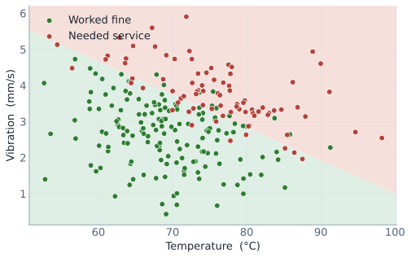
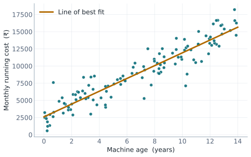
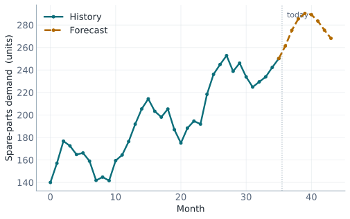
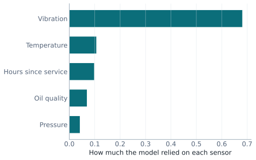

HAL Core Engineering · Predictive & Analytics Track
Predictive AI a field guide.
A keep-it reference to everything you ran in the hands-on lab — the ideas, the
pictures, and where they fit your work.
NumbersTextSpeechNo maths to memorise
One idea, three kinds of data · six worked examples · written for engineers, not programmers
Part 1 · The whole idea on one page
01 What predictive AI actually is
Strip away the buzzwords and predictive AI is one sentence:
Learn the pattern from past examples, then predict the next case.
A model studies many records where the answer is already known, finds the pattern that connects
the inputs to the answer, and uses that pattern to make a call on a new case it has never seen.
Like a seasoned technician who has inspected thousands of machines and can spot a bad one — not
magic, just pattern from experience.
The five-step rhythm behind every example
Every notebook you ran — whether the data was numbers, text, or speech — followed the same loop.
Step 1
Past records
→
Step 2 · learning
Find the pattern
→
Step 3
Predict + check
The words that sound scary (and what they really mean)
Dataset— a table; rows are cases, columns are measurements.
Feature— an input column; a clue the model gets to see.
Label / label column— the answer we want, and the column that holds it.
Model— the pattern-finder; "training" is when it learns.
Why we hide some data — the train/test split
We never judge a model on the data it studied — that would be like grading a student on the exact
exam paper they revised from. We hold back a slice and score the model only on those unseen cases.
75%Training set — the model learns from this
25%Test set — hidden, for an honest score
Accuracy is then simply: out of those hidden cases, how
many did it get right? A model that scores 100% on real data is usually cheating, not winning.
Part 2 · What "finding the pattern" looks like
02 A model draws a boundary
Here is the single most useful picture from the day. Each dot is a past machine; its
colour says whether it eventually needed service. Plotting temperature against vibration, the two
colours fall in different regions — and the model's whole job is to find the line between them.

Green = worked fine · Red = needed service. The shaded split is the boundary the model learned.
When a brand-new machine arrives, the model simply checks which side of the boundary its
numbers fall on. Hotter and shakier (top-right) → it predicts trouble. Cool and smooth (bottom-left)
→ it predicts fine. That is all a "trained classifier" is doing under the hood.
Takeaway: the model isn't memorising machines — it's learning a rule that
separates good from bad, so it can judge cases it has never seen.
Part 3 · The six things you ran
00 Foundation — the workflow
Scenario: predict whether a machine will need servicing from three numbers — hours used,
temperature, vibration.
What it showed: the full loop — load a table, split features from the label, hold back a
test set, train a small decision tree, and check its accuracy. The tree even printed the
if-then rules it invented on its own (e.g. "if vibration is high and the machine is old → needs
service"). Nobody wrote those rules; it learned them from the records.
Takeaway: "machine learning" is this five-step rhythm. Once you've seen it
once, every other example is a variation on it.
Where it fits: any place you keep records of cases with a known outcome —
inspections, test results, pass/fail logs — is a place this loop could learn from.
01 Classification — sorting into categories
Scenario: a final quality check — predict whether a finished part is PASS or
REJECT from a few measurements.
What it showed: the most important honesty lesson of the day. When rejects are rare, a lazy
model that always says "PASS" can score 80% accuracy while catching zero bad parts. So we
look deeper than accuracy, at the confusion matrix:
Model said FINE
Model said BAD
Truly fine
Correctgood part passed
False alarmgood part rejected
Truly bad
Missed faultbad part passed
Correctbad part caught
Precision asks "when it flags BAD, is it right?" Recall asks "of all the truly bad
parts, how many did it catch?" For safety, the missed fault (bottom-left) is the dangerous
box — so recall usually matters most.
Takeaway: a high accuracy can hide a useless model. Always ask what it
misses, not just how often it's right.
Where it fits: any yes/no call from measurements — accept/reject, healthy/faulty,
flag-for-inspection or not.
02 Regression & Forecasting — predicting numbers
Scenario A — regression: predict a machine's monthly running cost from its load and age.
The answer is a number, not a category. The model fits the straight line of best fit
that sits as close as possible to all the points.

Older machines cost more to run; the amber line is the relationship the model learned.
Scenario B — forecasting: predict spare-parts demand for the months ahead. The model learns
the trend (slowly rising) and the repeating seasonal bumps, then continues the line
into the future.

Solid = what happened · dashed = the forecast. The further out, the less certain.
Instead of accuracy, we measure error: on average, how far off is the prediction? (e.g.
"typically within ±₹1,100").
Takeaway: prediction isn't only yes/no — it can be a quantity or a trend.
Honest forecasts come with a margin, especially far ahead.
Where it fits: estimating a cost, a wear figure, or next quarter's demand to
plan stock and staffing.
03 Predictive Maintenance — catch failures early
Scenario: from a fleet of sensor-monitored machines, predict which will fail soon, so they
get serviced before they break down rather than after.
What it showed: a random forest (many small decision trees voting together) flags the
at-risk machines. But the part engineers value most is feature importance — the model tells
you which signal drove its decision, not just the verdict.

The model leaned hardest on vibration — matching the intuition that a shaking machine is in trouble.
It also met the unsupervised side: when there are no failure labels at all, an
anomaly detector can still flag the machines that look unusual compared with the normal
crowd — the ones worth a human inspection.
Takeaway: good predictive AI gives a reason, not just an answer — and
it can find "odd ones out" even with no labelled history.
Where it fits: condition monitoring, prioritising which equipment to inspect
first, spotting readings that drift away from normal.
04 Text Analytics — reading written reports
Scenario: a pile of free-text maintenance reports ("oil leaking near the gearbox",
"display flickers on startup") — sort each one to the right team automatically.
The one new idea: computers can't read words, only numbers. So we first turn each report
into a count of which words it contains (ignoring filler words like "the"). After that, it's the
same classification you already know.
"Oil leak near pump"
the written report
→
oil:1 · pump:1 · leak:1
words become numbers
→
Hydraulic
predicted team
The trained model even told us which words pointed to which team — oil, pressure, fluid → Hydraulic;
panel, wiring, circuit → Electrical — which is exactly how a human would sort them.
Takeaway: free-text logs are data too. Turn words into numbers and the same
predictive tools apply.
Where it fits: routing complaints, tagging defect reports, finding themes in
thousands of comments no one has time to read.
05 Speech Analytics — from spoken word to decision
Scenario: a technician speaks a quick status report instead of typing it. The computer
listens, writes it down, and routes it — hands-free.
Spoken report
the voice note
→
Transcribe (ASR)
speech → text
→
Classify
text → team
Speech analytics is just two familiar steps chained: speech-to-text (ASR) followed by the
text analytics from Module 04. It can mis-hear words with strong accents or background noise — a real
limit to keep in mind.
Takeaway: speech = speech-to-text + text analytics. The same one idea, now
reaching the spoken word.
Where it fits: verbal handovers, inspection notes, call logs — information
that today is spoken and then lost.
Part 4 · Keeping it honest
04 Powerful, not magic
The most useful thing you can take away is a clear sense of where this technology helps and where
it doesn't. Three limits worth remembering:
Only as good as the data
It learns from the records you feed it. Biased or thin history gives biased or thin predictions.
Never perfect
Real data surprises. We measure the gap honestly — missed faults, fuzzy forecasts — rather than hide it.
It assists; you decide
It ranks and flags with a reason. The engineer still makes the call.
Predict, not create
This is the predictive half of AI. The "generative" half (ChatGPT-style) is a different tool for a different job.
Full glossary
Dataset— a table of cases (rows) and measurements (columns).
Feature— an input column the model uses as a clue.
Label column— the column holding the answer to predict.
Training set— the rows the model learns from.
Test set— hidden rows kept for an honest score.
Accuracy— fraction of unseen cases it gets right.
Classification— predicting a category (pass/fail).
Regression— predicting a number on a scale.
Forecasting— predicting a value forward in time.
Confusion matrix— the table of hits, false alarms, missed faults.
Precision / recall— how often a flag is right / how many real cases caught.
Feature importance— which signal the model leaned on most.
Anomaly detection— finding unusual cases with no labels.
Supervised / unsupervised— learning with answers / finding structure without them.
TF-IDF (vectorising)— turning words into numbers a model can use.
Speech-to-text (ASR)— turning the spoken word into text.
Run it again — and what to try
Every notebook opens in Google Colab from a web browser, with nothing to install. Ask the
facilitator for the link, or open colab.research.google.com and use
File → Upload notebook. The best way to build intuition is to change one number
and re-run — edit a new machine's readings, or hide more of the data — and watch the prediction
move. Bring a problem from your own work: if you can describe it as "from these inputs, predict that
outcome," it may be a predictive-AI problem.